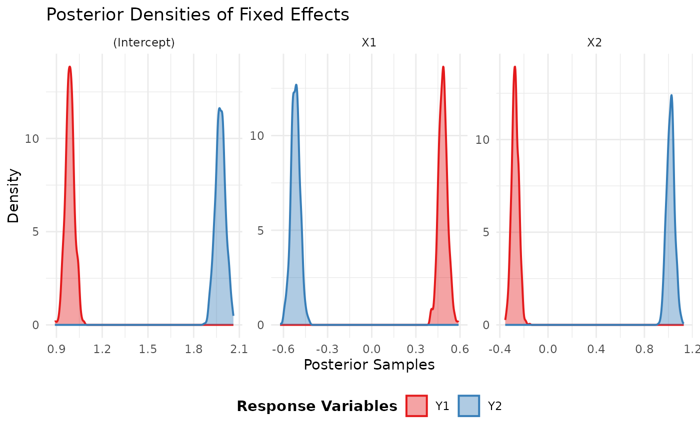
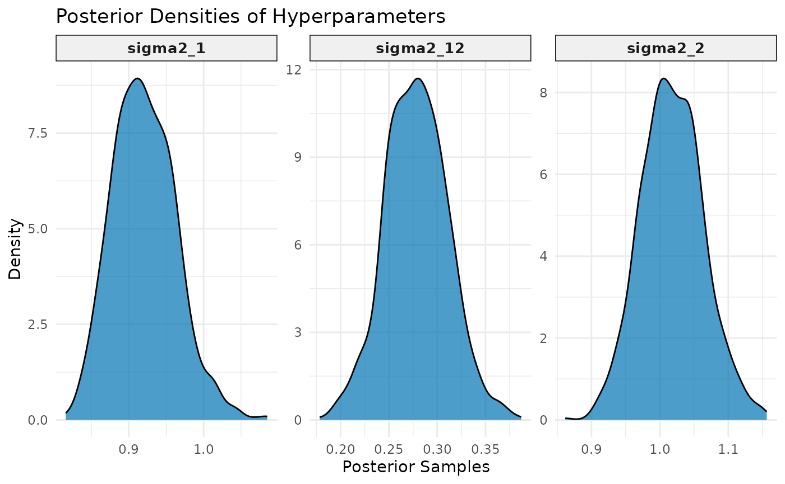

Multivariate linear regression
Joaquín Martínez-Minaya
multivarbayes-vignette.RmdOverview
This vignette demonstrates how to use the multivarbayes package to fit a Bayesian multivariate linear regression model, summarize the results, plot the posterior distributions, and make predictions on new data.
Generate Example Data
We generate some example data with an intercept term and multivariate normal errors.
set.seed(123)
n <- 1000 # number of observations
k <- 3 # number of covariates (including intercept)
m <- 2 # number of response variables
nsims <- 1000
# Covariate matrix with intercept
X <- cbind(1, matrix(rnorm(n * (k - 1)), n, k - 1))
# True coefficients
B_true <- matrix(c(1, 0.5, -0.3, 2, -0.5, 1), ncol = m)
# Multivariate normal errors
Sigma_true <- matrix(c(1, 0.3, 0.3, 1), ncol = m)
errors <- MASS::mvrnorm(n, mu = rep(0, m), Sigma = Sigma_true)
# Response matrix
Y <- X %*% B_true + errors
# Combine into data frame
data <- data.frame(cbind(Y, X))
colnames(data) <- c("Y1", "Y2", "Intercept", "X1", "X2")Fit the Model
We fit the model using the mlvr function and the formula
interface.
formula <- as.matrix(data[, c("Y1", "Y2")]) ~ X1 + X2
model_fit <- mlvr(formula, data = data)
model_fit$analytic## $B_n
## Y1 Y2
## (Intercept) 0.9873563 1.9759494
## X1 0.4835896 -0.5181053
## X2 -0.2735044 1.0172392
##
## $V_n
## Y1 Y2
## Y1 920.5009 277.9382
## Y2 277.9382 1018.2380
##
## $df
## [1] 1003
##
## $cov_matrix
## [,1] [,2] [,3] [,4] [,5]
## [1,] 9.185982e-04 -1.176349e-05 -3.719340e-05 2.773637e-04 -3.551897e-06
## [2,] -1.176349e-05 9.401850e-04 -7.978100e-05 -3.551897e-06 2.838817e-04
## [3,] -3.719340e-05 -7.978100e-05 9.070306e-04 -1.123026e-05 -2.408926e-05
## [4,] 2.773637e-04 -3.551897e-06 -1.123026e-05 1.016133e-03 -1.301252e-05
## [5,] -3.551897e-06 2.838817e-04 -2.408926e-05 -1.301252e-05 1.040012e-03
## [6,] -1.123026e-05 -2.408926e-05 2.738710e-04 -4.114252e-05 -8.825201e-05
## [,6]
## [1,] -1.123026e-05
## [2,] -2.408926e-05
## [3,] 2.738710e-04
## [4,] -4.114252e-05
## [5,] -8.825201e-05
## [6,] 1.003338e-03Summarize the Fitted Model
We can summarize the fitted model to inspect the posterior distributions of the coefficients and the scale matrix of Sigma.
summary(model_fit)## ###############################################################################
## ######## <--- Fixed effects parameters (Marginal of B | Y, X): ---> ###########
## ###############################################################################
##
## Response variable: Y1
## mean sd q0.025.2.5% q0.5.50% q0.975.97.5%
## (Intercept) 0.9882101 0.02944316 0.9335146 0.9878259 1.0473071
## X1 0.4841381 0.03035238 0.4267144 0.4839449 0.5459440
## X2 -0.2724936 0.02910453 -0.3279768 -0.2735268 -0.2150985
## mode
## (Intercept) 0.9870151
## X1 0.4867613
## X2 -0.2750810
##
## Response variable: Y2
## mean sd q0.025.2.5% q0.5.50% q0.975.97.5%
## (Intercept) 1.9750329 0.03313062 1.9085149 1.9748964 2.0390554
## X1 -0.5182408 0.03037799 -0.5799787 -0.5185471 -0.4579699
## X2 1.0171430 0.03244027 0.9549307 1.0184422 1.0824680
## mode
## (Intercept) 1.9693254
## X1 -0.5128016
## X2 1.0246825
##
## ###############################################################################
## ############### <--- Hyperparameters (Covariance Matrix): ---> ###############
## ###############################################################################
##
## mean sd q0.025.2.5% q0.5.50% q0.975.97.5% mode
## sigma2_1 0.9205045 0.04200995 0.8475987 0.9182751 1.0120416 0.9117627
## sigma2_12 0.2787608 0.03228799 0.2153344 0.2782053 0.3443851 0.2799257
## sigma2_2 1.0180927 0.04545909 0.9328351 1.0173819 1.1121817 1.0058404Plot Posterior Distributions
To visualize the posterior distributions of the coefficients, we can
use the plot method.
plot(model_fit)## $fixed_effects_plot
##
## $hyperparameter_plot
summary(model_fit)## ###############################################################################
## ######## <--- Fixed effects parameters (Marginal of B | Y, X): ---> ###########
## ###############################################################################
##
## Response variable: Y1
## mean sd q0.025.2.5% q0.5.50% q0.975.97.5%
## (Intercept) 0.9882101 0.02944316 0.9335146 0.9878259 1.0473071
## X1 0.4841381 0.03035238 0.4267144 0.4839449 0.5459440
## X2 -0.2724936 0.02910453 -0.3279768 -0.2735268 -0.2150985
## mode
## (Intercept) 0.9870151
## X1 0.4867613
## X2 -0.2750810
##
## Response variable: Y2
## mean sd q0.025.2.5% q0.5.50% q0.975.97.5%
## (Intercept) 1.9750329 0.03313062 1.9085149 1.9748964 2.0390554
## X1 -0.5182408 0.03037799 -0.5799787 -0.5185471 -0.4579699
## X2 1.0171430 0.03244027 0.9549307 1.0184422 1.0824680
## mode
## (Intercept) 1.9693254
## X1 -0.5128016
## X2 1.0246825
##
## ###############################################################################
## ############### <--- Hyperparameters (Covariance Matrix): ---> ###############
## ###############################################################################
##
## mean sd q0.025.2.5% q0.5.50% q0.975.97.5% mode
## sigma2_1 0.9205045 0.04200995 0.8475987 0.9182751 1.0120416 0.9117627
## sigma2_12 0.2787608 0.03228799 0.2153344 0.2782053 0.3443851 0.2799257
## sigma2_2 1.0180927 0.04545909 0.9328351 1.0173819 1.1121817 1.0058404
B_true## [,1] [,2]
## [1,] 1.0 2.0
## [2,] 0.5 -0.5
## [3,] -0.3 1.0Predict New Observations
Finally, we can use the predict function to predict
responses for new observations based on the fitted model.
# Example usage:
# Assuming model_fit is the fitted object and newdata is the new data to predict on
newdata <- data.frame(X1 = c(0.5, -1, 2), X2 = c(-0.5, 1.5, 0)) # New covariate values
newdata <- data[1:5, c("X1", "X2")]
newdata_real <- data[1:5, c("Y1", "Y2")]
predictions <- predict(model_fit, newdata = newdata)
summary(predictions)## Length Class Mode
## summary 2 -none- list
## analytical 3 -none- list
## marginals 2 -none- listIn this final part, we compare the theoretical predictive distribution with the simulated predictive distribution, as well as with the actual observed values. This allows us to visually inspect how well the model captures the underlying data distribution and the uncertainty associated with it.
# Suppose `predictions` is the object containing the results obtained from the `predict.mlvr` function
# and `newdata_real` holds the actual values for each predicted individual.
# Extract necessary elements from predictions
analytic_mean <- predictions$analytic$mean # Theoretical predictive mean
analytic_cov <- predictions$analytic$cov_matrix # Theoretical predictive covariance
predictive_samples <- predictions$marginals # Simulated predictive samples
df <- predictions$analytic$df # Degrees of freedom for the t-Student distribution
newdata_real <- newdata_real # Actual values provided
# Create a data frame to store simulated predictive samples
simulated_data <- data.frame()
n_obs <- nrow(analytic_mean) # Number of observations in newdata
n_sims <- ncol(predictive_samples[[1]]) # Number of simulations (assume all responses have the same number of simulations)
n_responses <- length(predictive_samples) # Number of response variables
# Build the data frame for simulated predictive samples
for (resp in 1:n_responses) {
for (obs in 1:n_obs) {
sim_values <- predictive_samples[[resp]][obs, ] # Simulated samples for the response variable and observation
sim_df <- data.frame(
Observation = paste0("Obs_", obs), # Observation label
Response = paste0("Y", resp), # Response variable name
Value = sim_values, # Simulated samples
Group = "Simulated" # Group label
)
simulated_data <- rbind(simulated_data, sim_df)
}
}
# Create a data frame for theoretical densities
theoretical_data <- data.frame()
# Calculate theoretical density for each observation and response variable
for (obs in 1:n_obs) {
for (resp in 1:n_responses) {
mean_val <- analytic_mean[obs, resp] # Theoretical mean for the response variable
var_val <- analytic_cov[resp, resp, obs] # Variance for the response variable
# Create a sequence of values to represent the theoretical density
x_vals <- seq(mean_val - 4 * sqrt(var_val), mean_val + 4 * sqrt(var_val), length.out = 500)
# Calculate density using the t-Student distribution
dens_vals <- dt((x_vals - mean_val) / sqrt(var_val), df = df) / sqrt(var_val)
# Create a data frame to store theoretical densities
theor_df <- data.frame(
Observation = paste0("Obs_", obs),
Response = paste0("Y", resp),
Value = x_vals,
Density = dens_vals,
Group = "Theoretical"
)
theoretical_data <- rbind(theoretical_data, theor_df)
}
}
# Create a data frame for the actual observed values
real_values_data <- data.frame(
Observation = rep(paste0("Obs_", 1:n_obs), each = n_responses), # Labeled observations
Response = rep(paste0("Y", 1:n_responses), times = n_obs), # Response variable name
Value = as.vector(t(newdata_real)), # Convert actual values to a vector
Group = "Real" # Group label for "Real"
)
# Convert simulated data to densities for plotting
simulated_densities <- simulated_data %>%
group_by(Observation, Response) %>%
do({
density_data <- density(.$Value, adjust = 1.2) # Calculate density for simulated samples
data.frame(Value = density_data$x, Density = density_data$y) # Store density values
}) %>%
ungroup() %>%
mutate(Group = "Simulated") # Label as "Simulated" for plotting
# Combine theoretical and simulated densities into a single data frame
plot_data <- rbind(simulated_densities, theoretical_data)
# Create plots
ggplot() +
# Histograms for simulated predictive samples
geom_line(data = simulated_densities, aes(x = Value, y = Density, color = Group), size = 1.2) +
# Line for theoretical densities
geom_line(data = theoretical_data, aes(x = Value, y = Density, color = Group), linetype = "dashed", size = 1.2) +
# Vertical line for actual observed values
geom_vline(data = real_values_data, aes(xintercept = Value, color = Group), linetype = "dotted", size = 1.2) +
facet_grid(Response ~ Observation, scales = "free") + # Facets by response and observation
labs(title = "Predictive Distributions for Each Observation",
x = "Value",
y = "Density") +
theme_minimal() +
theme(legend.position = "top", legend.title = element_text(face = "bold")) +
scale_color_manual(values = c("blue", "red", "green")) + # Colors for distributions and actual values
guides(color = guide_legend(title = "Distribution Types"))